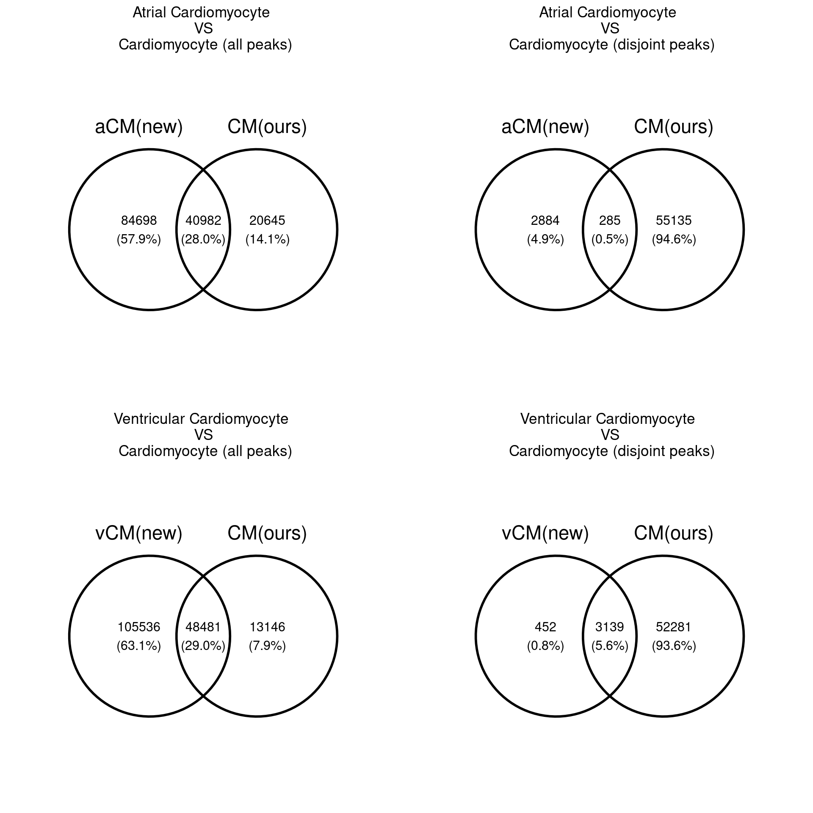

Comparison with the Hocker’s study
XSun
2022-07-22
Last updated: 2022-08-08
Checks: 7 0
Knit directory: heart_atlas/
This reproducible R Markdown analysis was created with workflowr (version 1.7.0). The Checks tab describes the reproducibility checks that were applied when the results were created. The Past versions tab lists the development history.
Great! Since the R Markdown file has been committed to the Git repository, you know the exact version of the code that produced these results.
Great job! The global environment was empty. Objects defined in the global environment can affect the analysis in your R Markdown file in unknown ways. For reproduciblity it’s best to always run the code in an empty environment.
The command set.seed(20220722) was run prior to running the code in the R Markdown file. Setting a seed ensures that any results that rely on randomness, e.g. subsampling or permutations, are reproducible.
Great job! Recording the operating system, R version, and package versions is critical for reproducibility.
Nice! There were no cached chunks for this analysis, so you can be confident that you successfully produced the results during this run.
Great job! Using relative paths to the files within your workflowr project makes it easier to run your code on other machines.
Great! You are using Git for version control. Tracking code development and connecting the code version to the results is critical for reproducibility.
The results in this page were generated with repository version c8f433c. See the Past versions tab to see a history of the changes made to the R Markdown and HTML files.
Note that you need to be careful to ensure that all relevant files for the analysis have been committed to Git prior to generating the results (you can use wflow_publish or wflow_git_commit). workflowr only checks the R Markdown file, but you know if there are other scripts or data files that it depends on. Below is the status of the Git repository when the results were generated:
Ignored files:
Ignored: analysis/figure/
Note that any generated files, e.g. HTML, png, CSS, etc., are not included in this status report because it is ok for generated content to have uncommitted changes.
These are the previous versions of the repository in which changes were made to the R Markdown (analysis/compare_paper1.Rmd) and HTML (docs/compare_paper1.html) files. If you’ve configured a remote Git repository (see ?wflow_git_remote), click on the hyperlinks in the table below to view the files as they were in that past version.
| File | Version | Author | Date | Message |
|---|---|---|---|---|
| Rmd | c8f433c | XSun | 2022-08-08 | wflow_publish(“analysis/compare_paper1.Rmd”) |
| Rmd | c5148c0 | XSun | 2022-08-07 | updata |
| Rmd | e056265 | XSun | 2022-07-25 | update |
| html | e056265 | XSun | 2022-07-25 | update |
| Rmd | 7b499bc | XSun | 2022-07-25 | update |
| html | 7b499bc | XSun | 2022-07-25 | update |
| Rmd | f271fc7 | XSun | 2022-07-22 | update |
| html | f271fc7 | XSun | 2022-07-22 | update |
| Rmd | 7a62b4c | XSun | 2022-07-22 | update |
| html | 7a62b4c | XSun | 2022-07-22 | update |
| Rmd | 0efe457 | XSun | 2022-07-22 | update |
| html | 0efe457 | XSun | 2022-07-22 | update |
| html | 27693aa | XSun | 2022-07-22 | update |
| Rmd | f3bc3e1 | XSun | 2022-07-22 | update |
Warning: replacing previous import 'utils::download.file' by
'restfulr::download.file' when loading 'rtracklayer'Warning: replacing previous import 'GenomicFeatures::proteinToGenome' by
'ensembldb::proteinToGenome' when loading 'GenomicDistributionsData'Approaches
We compare the OCRs from our dataset with another paper here.The peak calls are available here. There are two levels of peaks- the peaks called on different clusters using MACS2 and peaks determined to be specifically accessible in a given cell type.
Compare OCRs with existing single-cell studies
Obtain the genomic distribution of the cell-type-specific peaks .
Finalized plots
Distribution of peak ranges (all peaks)
The peak ranges of our data were fixed to 501bp.
The range of the new data set:
| Version | Author | Date |
|---|---|---|
| 0efe457 | XSun | 2022-07-22 |
Similarity between the two data sets
We first calculated the Jaccard index for each pairwise comparison between the two data sets. The results are displayed by heatmaps colored by jaccard index value.
We computed Jaccard index using:
genomicCorr.jaccard = function(query, reference) {
res = sum(width(intersect(query, reference))) / sum(as.numeric(width(union(query, reference))))
return(res)
}This is the heatmap for all peaks. Since the data for Lymphocyte in the new dataset is unavailable, there are just 8 columns in this plot.
load("/project2/xinhe/xsun/heart_atlas/1.OCR_compare/jaccard_heatmap/jcd_matrix_all_uniq.rdata")
Heatmap(matrix = jcd_matrix, cluster_rows = F,
cluster_columns = F, show_row_names = T, row_names_side = "left",
name = "Jaccard Index",
col = circlize::colorRamp2(c(0, 0.3), c("white","firebrick")), ###modify the figures
row_title = NULL,
column_title = NULL,
row_gap = unit(1, "mm"),
column_gap = unit(1, "mm"),
na_col = "white",
use_raster = T)
This is the heatmap for disjoint peaks.
load("/project2/xinhe/xsun/heart_atlas/1.OCR_compare/jaccard_heatmap/jcd_matrix_disjoint_uniq.rdata")
Heatmap(matrix = jcd_matrix, cluster_rows = F,
cluster_columns = F, show_row_names = T, row_names_side = "left",
name = "Jaccard Index",
col = circlize::colorRamp2(c(0, 0.2), c("white","firebrick")), ###modify the figures
row_title = NULL,
column_title = NULL,
row_gap = unit(1, "mm"),
column_gap = unit(1, "mm"),
na_col = "white",
use_raster = T)
A direct comparison between the Cardiomycyte peak sets

Our disjoint CM peaks are a subset of the CM peaks (all)
Peak quality and overlap proportion (for all peaks)
We sorted our peak data by their quality (FDR). Then we computed the cumulative proportion that our peaks overlap with the new data. In the scatter plots below, each dot represents a peak range in our data set. Red dots mean the peak ranges do not overlap with the peaks in new data. The plot shows that the peaks have lower quality tend to not overlap with new data set since there are more dots in red when FDR getting larger.
We only made plots for the pairs show correlation in heatmap.
ocr <- readRDS("/project2/gca/aselewa/heart_atlas_project/ArchR/ArchR_heart_latest_noAtrium/PeakCalls/DA_MARKERS_FDRP_1_log2FC_1.rds")
ocr_select <- c(1,1,2,3,5,6,7,8)
celltype_new <- c("Ventricular_cardiomyocyte","Atrial_cardiomyocyte","Endothelial","Fibroblast","Macrophage","Nervous","Smooth_muscle","Smooth_muscle")
folder_out <- "/project2/xinhe/xsun/heart_atlas/1.OCR_compare/cdf_plots/"
p <- list()
for (i in 1:length(ocr_select)) {
dat_our <- ocr[[ocr_select[i]]]
extraCols_narrowPeak <- c(signalValue = "numeric", pValue = "numeric",
qValue = "numeric", peak = "integer")
dat_new <- import(paste0("/project2/xinhe/xsun/heart_atlas/1.OCR_compare/peakdata_ren/celltype/",celltype_new[i],".narrowPeak.bed"), format = "BED",
extraCols = extraCols_narrowPeak)
dat_new <- unique(dat_new)
df_our <- cbind(as.data.frame(dat_our@seqnames),as.data.frame(dat_our@ranges@start),as.data.frame(dat_our@ranges@width),dat_our$Log2FC,dat_our$FDR)
colnames(df_our) <- c("chr","start","width","Log2FC","FDR")
df_our$index <- 0
overlap_index <- findOverlaps(dat_our,dat_new)
index_our <- overlap_index@from
index_our_uniq <- index_our[!duplicated(index_our)]
df_our$index[index_our_uniq] <- 1
df_our$persentage <- as.numeric(as.character(df_our$index))/sum(as.numeric(as.character(df_our$index)))
df_our_sort <- df_our[order(as.numeric(as.character(df_our$FDR))),]
df_our_sort$cumsum <- cumsum(df_our_sort$persentage)
df_our_sort$order <- seq(1:nrow(df_our_sort))
#save(df_our_sort, file = paste0(folder_out,names(ocr)[ocr_select[i]],"_df.rdata"))
p[[i]] <- ggplot(df_our_sort, aes(x=order,y=cumsum)) +
theme_bw(base_line_size =0.3) +
geom_point(aes(colour = factor(index))) +
scale_color_manual("overlap",values=c("red", "grey"),labels = c("no", "yes")) +
xlab("Order by FDR from our data (low to high)") + ylab("Cumulative percentage of overlapped peaks") +
ggtitle(paste0(names(ocr)[ocr_select[i]],"(ours)","\n and \n ",celltype_new[i], "(new)")) +
theme(plot.title = element_text(hjust = 0.5)) +
annotate("text", x = length(dat_our) *0.2, y = 1, label = paste0("number of peaks_our = ", length(dat_our))) +
annotate("text", x = length(dat_our) *0.2, y = 0.95, label = paste0("number of peaks_new = ", length(dat_new))) +
annotate("text", x = length(dat_our) *0.2, y = 0.9, label = paste0("number of peaks_overlap = ", sum(df_our_sort$index)))
}
all <- grid.arrange(p[[1]],p[[2]],p[[3]],p[[4]],p[[5]],p[[6]],p[[7]],p[[8]], nrow = 2)
| Version | Author | Date |
|---|---|---|
| 7b499bc | XSun | 2022-07-25 |
Genomic distribution for two datasets
We made Genomic distribution plots for the pairs show correlation in heatmap.
ocr <- readRDS("/project2/gca/aselewa/heart_atlas_project/ArchR/ArchR_heart_latest_noAtrium/PeakCalls/DA_MARKERS_FDRP_1_log2FC_1.rds")
ocr_select <- c(1,1,2,3,5,6,7,8)
celltype_new <- c("Ventricular_cardiomyocyte","Atrial_cardiomyocyte","Endothelial","Fibroblast","Macrophage","Nervous","Smooth_muscle","Smooth_muscle")
folder_out <- "/project2/xinhe/xsun/heart_atlas/1.OCR_compare/cdf_plots/"
p<-list()
for (i in 1:length(ocr_select)) {
dat_our <- ocr[[ocr_select[i]]]
extraCols_narrowPeak <- c(signalValue = "numeric", pValue = "numeric",
qValue = "numeric", peak = "integer")
dat_new <- import(paste0("/project2/xinhe/xsun/heart_atlas/1.OCR_compare/peakdata_ren/celltype/",celltype_new[i],".narrowPeak.bed"), format = "BED",
extraCols = extraCols_narrowPeak)
dat_new <- unique(dat_new)
queryList <- GRangesList(dat_new=dat_new, dat_our=dat_our)
cal <- calcPartitionsRef(queryList, "hg38")
p[[i]] <- plotPartitions(cal) +
ggtitle(paste0(names(ocr)[ocr_select[i]],"(ours)","\n and \n ",celltype_new[i], "(new)"))
}
all <- grid.arrange(p[[1]],p[[2]],p[[3]],p[[4]],p[[5]],p[[6]],p[[7]],p[[8]], nrow = 2)
| Version | Author | Date |
|---|---|---|
| e056265 | XSun | 2022-07-25 |
sessionInfo()R version 4.2.0 (2022-04-22)
Platform: x86_64-pc-linux-gnu (64-bit)
Running under: Scientific Linux 7.4 (Nitrogen)
Matrix products: default
BLAS/LAPACK: /software/openblas-0.3.13-el7-x86_64/lib/libopenblas_haswellp-r0.3.13.so
locale:
[1] LC_CTYPE=en_US.UTF-8 LC_NUMERIC=C
[3] LC_TIME=en_US.UTF-8 LC_COLLATE=en_US.UTF-8
[5] LC_MONETARY=en_US.UTF-8 LC_MESSAGES=en_US.UTF-8
[7] LC_PAPER=en_US.UTF-8 LC_NAME=C
[9] LC_ADDRESS=C LC_TELEPHONE=C
[11] LC_MEASUREMENT=en_US.UTF-8 LC_IDENTIFICATION=C
attached base packages:
[1] grid stats4 stats graphics grDevices utils datasets
[8] methods base
other attached packages:
[1] GenomicDistributionsData_1.4.0 GenomicDistributions_1.4.6
[3] ggvenn_0.1.9 dplyr_1.0.9
[5] gridExtra_2.3 ComplexHeatmap_2.12.0
[7] ggplot2_3.3.6 rtracklayer_1.56.0
[9] GenomicRanges_1.48.0 GenomeInfoDb_1.32.2
[11] IRanges_2.30.0 S4Vectors_0.34.0
[13] BiocGenerics_0.42.0 workflowr_1.7.0
loaded via a namespace (and not attached):
[1] circlize_0.4.15 AnnotationHub_3.4.0
[3] BiocFileCache_2.4.0 plyr_1.8.7
[5] lazyeval_0.2.2 BiocParallel_1.30.3
[7] digest_0.6.29 ensembldb_2.20.2
[9] foreach_1.5.2 htmltools_0.5.2
[11] fansi_1.0.3 magrittr_2.0.3
[13] memoise_2.0.1 BSgenome_1.64.0
[15] cluster_2.1.3 doParallel_1.0.17
[17] Biostrings_2.64.0 matrixStats_0.62.0
[19] prettyunits_1.1.1 colorspace_2.0-3
[21] blob_1.2.3 rappdirs_0.3.3
[23] xfun_0.30 callr_3.7.0
[25] crayon_1.5.1 RCurl_1.98-1.7
[27] jsonlite_1.8.0 iterators_1.0.14
[29] glue_1.6.2 gtable_0.3.0
[31] zlibbioc_1.42.0 XVector_0.36.0
[33] GetoptLong_1.0.5 DelayedArray_0.22.0
[35] shape_1.4.6 scales_1.2.0
[37] DBI_1.1.2 Rcpp_1.0.8.3
[39] xtable_1.8-4 progress_1.2.2
[41] clue_0.3-61 bit_4.0.4
[43] httr_1.4.3 RColorBrewer_1.1-3
[45] ellipsis_0.3.2 farver_2.1.0
[47] pkgconfig_2.0.3 XML_3.99-0.9
[49] sass_0.4.1 dbplyr_2.1.1
[51] utf8_1.2.2 labeling_0.4.2
[53] tidyselect_1.1.2 rlang_1.0.2
[55] reshape2_1.4.4 later_1.3.0
[57] AnnotationDbi_1.58.0 munsell_0.5.0
[59] BiocVersion_3.15.2 tools_4.2.0
[61] cachem_1.0.6 cli_3.3.0
[63] generics_0.1.2 RSQLite_2.2.14
[65] ExperimentHub_2.4.0 evaluate_0.15
[67] stringr_1.4.0 fastmap_1.1.0
[69] yaml_2.3.5 processx_3.5.3
[71] knitr_1.39 bit64_4.0.5
[73] fs_1.5.2 purrr_0.3.4
[75] AnnotationFilter_1.20.0 KEGGREST_1.36.2
[77] whisker_0.4 mime_0.12
[79] xml2_1.3.3 biomaRt_2.52.0
[81] compiler_4.2.0 rstudioapi_0.13
[83] filelock_1.0.2 curl_4.3.2
[85] png_0.1-7 interactiveDisplayBase_1.34.0
[87] tibble_3.1.7 bslib_0.3.1
[89] stringi_1.7.6 highr_0.9
[91] ps_1.7.0 GenomicFeatures_1.48.3
[93] lattice_0.20-45 ProtGenerics_1.28.0
[95] Matrix_1.4-1 vctrs_0.4.1
[97] pillar_1.7.0 lifecycle_1.0.1
[99] BiocManager_1.30.18 jquerylib_0.1.4
[101] GlobalOptions_0.1.2 data.table_1.14.2
[103] bitops_1.0-7 httpuv_1.6.5
[105] R6_2.5.1 BiocIO_1.6.0
[107] promises_1.2.0.1 codetools_0.2-18
[109] assertthat_0.2.1 SummarizedExperiment_1.26.1
[111] rprojroot_2.0.3 rjson_0.2.21
[113] withr_2.5.0 GenomicAlignments_1.32.0
[115] Rsamtools_2.12.0 GenomeInfoDbData_1.2.8
[117] parallel_4.2.0 hms_1.1.1
[119] rmarkdown_2.14 MatrixGenerics_1.8.0
[121] git2r_0.30.1 getPass_0.2-2
[123] Biobase_2.56.0 shiny_1.7.1
[125] restfulr_0.0.14
Comments
1a. Compare cell type clusters with two other single-cell chromatin studies in heart tissue ( https://pubmed.ncbi.nlm.nih.gov/33990324/ and https://pubmed.ncbi.nlm.nih.gov/34774128/ ). The first paper specifically focused on the heart, the second one mapped accessibility across many human tissues.
1b. Compare OCRs with existing single-cell studies